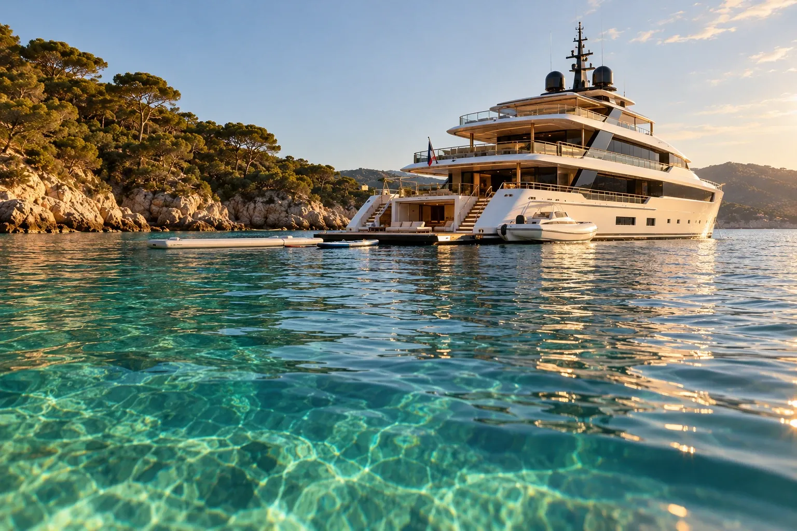
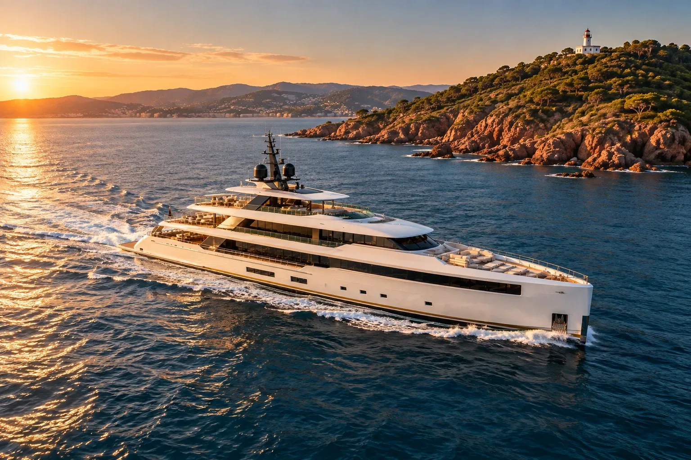
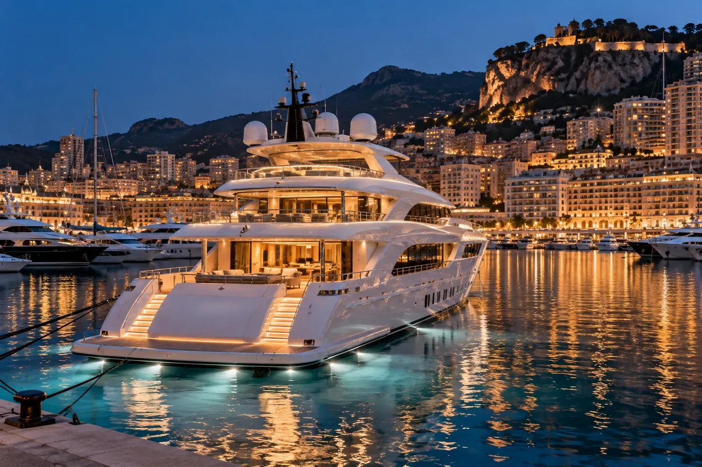
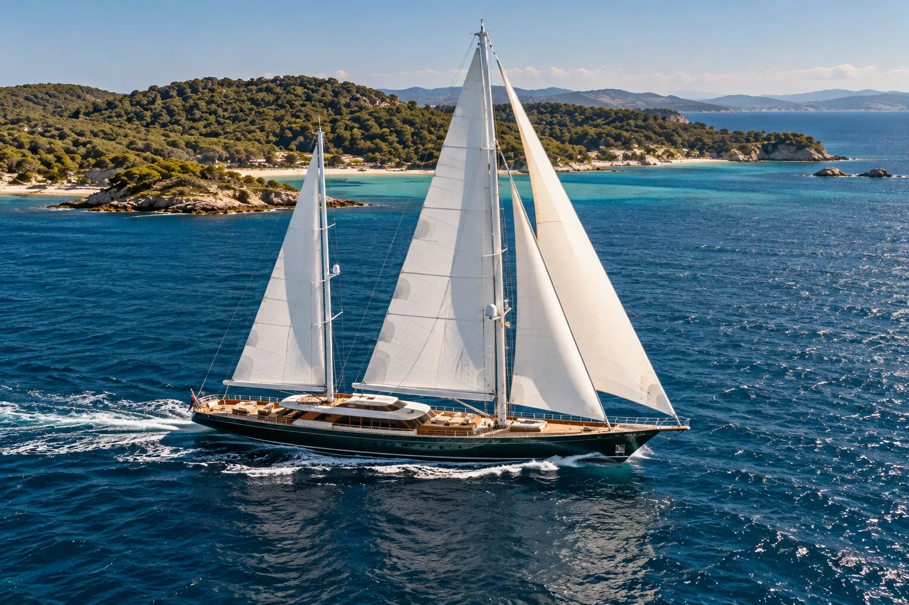
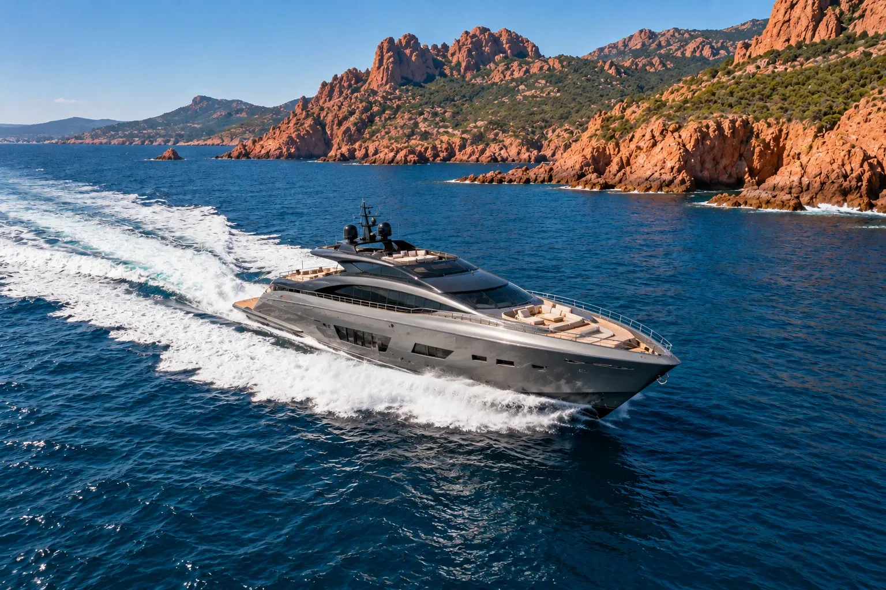

Noleggio con equipaggio · Da Saint‑Tropez a Monaco
Noleggiare uno yacht
Una settimana tra le isole d'Oro e Monaco, un equipaggio scelto, un itinerario tracciato ogni mattina con il comandante secondo il vento del giorno.
- yacht a noleggio
- 4
- a settimana, da
- 72 k€
- ospiti, fino a
- 12
Un noleggio riuscito non dipende solo dalla barca. Dipende dal comandante che conosce la caletta riparata, dallo chef che sa cosa Le piace e dal broker che li ha scelti entrambi.
Una settimana tipo
Da Saint‑Tropez a Monaco, in sette scali
Un itinerario indicativo: il comandante lo adatta ogni mattina al vento, ai Suoi desideri e al ritmo dei Suoi ospiti.
-
01Sabato
Saint‑Tropez, poi Pampelonne
Imbarco nel porto vecchio nel tardo pomeriggio. Primo ancoraggio nella baia di Pampelonne, cena a bordo.
-
02Domenica
Porquerolles
La plage d'Argent, i pini, un'acqua che sembra tropicale. Pranzo a bordo, il pomeriggio in bicicletta sull'isola.
-
03Lunedì
Port‑Cros
Il parco nazionale e il suo sentiero subacqueo. La giornata più tranquilla della settimana.
-
04Martedì
L'Estérel
Le calette di porfido rosso. Ancoraggio ai piedi delle rocce, bagno dalla piattaforma di poppa.
-
05Mercoledì
Le isole di Lérins
Sainte‑Marguerite e Saint‑Honorat, il monastero e le sue vigne. La sera, Cannes a portata di tender.
-
06Giovedì
Monaco
Arrivo a Port Hercule all'ora blu. Cena a bordo di fronte alla Rocca illuminata.
-
07Venerdì
Ritorno a Saint‑Tropez
Lungo la costa, un'ultima sosta a Pampelonne. Ultima cena di fronte al paese.
La flotta a noleggio
4 yacht, da 33 a 50 metri
Tariffe settimanali, dalla bassa all'alta stagione, equipaggio incluso. Ogni scheda mostra le settimane ancora libere.
-

Esclusiva Portolan
Camarat
Da 240.000 € a 285.000 € a settimana
-

Benetti
Mistral Blanc
Da 185.000 € a 215.000 € a settimana
-

Perini Navi · barca a vela
Solenne
Da 72.000 € a 85.000 € a settimana
-

Custom Line
Tramontane
Da 95.000 € a 110.000 € a settimana
Budget
Quanto costa davvero una settimana
La tariffa indicata è solo una parte del budget. Scelga uno yacht e un periodo: ecco l'impegno complessivo, senza sorprese.
Yacht
Periodo
- Noleggio settimanale, equipaggio incluso
- Anticipo spese (APA, circa 30 %) carburante, pasti, bevande, porti; il residuo Le viene restituito
- IVA sul noleggio 20 % nelle acque francesi, secondo l'itinerario
- Impegno totale indicativo
Ordine di grandezza, escluse la mancia all'equipaggio (d'uso dal 10 al 15 % della tariffa) e le spese di trasferimento. Il preventivo esatto arriva con il contratto.
Come si svolge un noleggio
Dalla prima domanda al primo ancoraggio
-
01
La Sua richiesta
Le Sue date, i Suoi ospiti, i Suoi desideri. Un broker Le risponde entro 24 ore con due o tre yacht, non di più.
-
02
L'opzione
Poniamo un'opzione gratuita sulla settimana scelta, il tempo di decidere in famiglia o con gli amici.
-
03
Il contratto
Un contratto standard MYBA, riconosciuto in tutto il Mediterraneo. Acconto del 50 % alla firma, saldo un mese prima dell'imbarco.
-
04
La preparazione
Menu, allergie, giochi d'acqua, un compleanno da festeggiare: il comandante e lo chef preparano la Sua settimana insieme a noi.
-
05
L'imbarco
Accoglienza a bordo a Saint‑Tropez o a Monaco. Restiamo raggiungibili tutta la settimana, fino allo sbarco.
Domande frequenti
Prima di salire a bordo
Serve la patente nautica?
No. Lo yacht è condotto dal suo comandante e dal suo equipaggio, che conoscono ogni ancoraggio della costa.
Ci si può imbarcare altrove che a Saint‑Tropez?
Sì: Monaco, Cannes, Antibes o Saint‑Raphaël. Si aggiungono spese di trasferimento secondo la distanza tra il porto d'armamento dello yacht e il Suo porto d'imbarco.
Con quanto anticipo bisogna prenotare?
Per luglio e agosto, già dall'autunno o dall'inverno precedente: gli yacht migliori partono presto. Maggio, giugno e settembre restano più flessibili, e spesso più belli.
Si può noleggiare per meno di una settimana?
Sì, fuori dall'alta stagione, a partire da tre giorni a seconda degli yacht. I più piccoli si noleggiano anche a giornata.
I bambini sono i benvenuti?
Certamente. Avvisiamo l'equipaggio, che prevede giubbotti adatti e, su richiesta, una tata a bordo.
E se il tempo peggiora?
Il comandante adatta l'itinerario ogni mattina al vento. La costa offre sempre un riparo: la settimana si sposta, non si perde.
Che cos'è l'anticipo spese (APA)?
Circa il 30 % della tariffa, versato prima dell'imbarco per carburante, pasti, bevande e porti. Il comandante ne tiene il conto giorno per giorno e Le restituisce il residuo.
Preparare un noleggio
Parliamo della Sua settimana
Un broker La richiama entro 24 ore con due o tre yacht disponibili nelle Sue date.